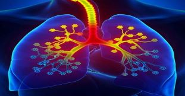
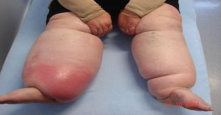

Types of Sicknesses and Diseases
-
Spine Cancer
A form of cancer that affects the spine, causing pain, mobility issues, and other complications.
-
Bone Cancer
A type of cancer that begins in the bones, leading to pain, fractures, and potentially spread to other organs.
-
Fibromyalgia
A condition causing widespread pain, fatigue, and tenderness in muscles, ligaments, and tendons.
-

Asthma
A respiratory condition marked by difficulty breathing due to inflammation and narrowing of airways.
-

Enlarged Prostate Gland
A condition where the prostate gland grows larger, causing urinary issues.
-
Burning Feet
A sensation of heat or burning in the feet, often associated with neuropathy or other nerve-related issues.
-
Clogged Heart Arteries
A condition where plaque builds up in the arteries, leading to restricted blood flow and increased heart disease risk.
-
Bleeding Homophids
A disorder where blood vessels in the rectum break, leading to bleeding during bowel movements.
-

Male Infertility
The inability of a man to father children, often caused by low sperm count or hormonal imbalances.
-
Stomach Ulcers
Painful sores that develop on the lining of the stomach or the upper part of the small intestine.
-
Gastric Ulcer
Ulcers that form in the stomach lining, causing pain, indigestion, and nausea.
-
Varicose Veins
Enlarged, twisted veins often found in the legs, causing pain, swelling, and discomfort.
-
Chest Pain
Pain or discomfort in the chest, which can be a sign of heart disease or other conditions.
-
Constipation
A condition where bowel movements become infrequent or difficult to pass.
-
Arthritic and Gout
Conditions causing joint pain, stiffness, and swelling, with gout being triggered by high uric acid levels.
-

Dropsy
A condition characterized by swelling, typically in the legs and feet, caused by fluid retention.
-
Cerebral Stroke
A medical emergency where blood flow to the brain is interrupted, causing brain damage.
-

Hypertension
High blood pressure that increases the risk of heart disease, stroke, and kidney failure.
-
Anxiety
A condition characterized by excessive worry, fear, and nervousness that can interfere with daily life.
-
Waist Pain
Discomfort in the lower back often caused by muscle strain, herniated discs, or poor posture.
-
High Sugar Levels (Diabetes)
A condition where blood sugar levels are abnormally high, leading to fatigue, vision problems, and organ damage.
-
Fever
Raised body temperature typically due to infection, indicating an underlying health issue.